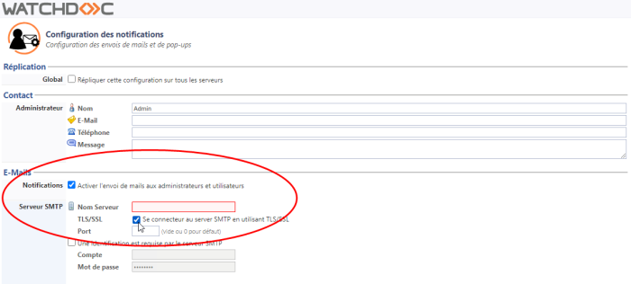

Compatibilités - Marques compatibles
La fonction WEScan de Watchdoc est compatible avec les périphériques d'impression suivants :
|
|
Scan To Mail | Scan to Me | Scan to Folder | Scan to Url |
| Hewlett Packard | ✔ | ✔ | ✔ | ✔ |
| Konica Minolta* Open API - |
✔ | ✔ | ✔ | ✔ |
| Kyocera | ✔ | ✔ | ✔ | ✔ |
| Lexmark* - SDK6 | ✔ | ✔ | ✔ | ✔ |
| Sharp* |
✔ | ✔ | ✔ | ✔ |
| Xerox | ✔ | ✔ | ✔ | ✔ |
* la reconnaissance optique des caractères (OCR) n'est pas supportée par ces périphériques.
Prérequis organisationnels
Licence : WEScan est compatible dès la version Watchdoc 5.4 et nécessite une licence WES.
Dans le cas où la fonction WEScan est activée dans un domaine (configuration maître/esclave, master/slaves) :
-
il est obligatoire d'activer la fonction "impression à la demande interserveur" sur le master et sur les autres serveurs (slaves) (cf. Activer la fonction d'impression à la demande inter-serveur) ;
-
il convient de modifier les profils sur le serveur maître (master) afin qu'ils puissent être répliqués sur les profils de tous les autres serveurs qui en dépendent.
Les profils par défaut sont enregistrés dans le dossier Watchdoc/Data/ScanProfileData sous forme de fichiers .json. Ils sont également enregistrés dans la base Watchdocstats, sous la table dbo.Jsondb.
Pour concevoir d'autres profils de destination conformes, il est recommandé d'utiliser l'outil ScanProfilesCustomizer (cf. Personnaliser les profils de scan avec ScanProfilesCustomizer).
N.B. : dans un domaine, pour garantir la disponibilité des profils de numérisation sur tous les serveurs qui dépendent du serveur maître en cas de panne de la base de données interserveur, il convient de dupliquer tous les fichiers JSON des profils de numérisation du serveur master sur les serveurs qui en dépendent.
Pour cela, copiez le dossier de profils de numérisation personnalisés (dans lequel vous avez enregistré vos profils personnalisés) de votre serveur master sur le(s) serveur(s) qui en dépendent.
Prérequis techniques
-
LDAP : l'utilisateur doit disposer d'un compte LDAP avec lequel s'authentifier sur le WEScan (notamment pour les Destinations Scan to me et Scan to home) ;
-
SMTP : pour envoyer aux utilisateurs le document numérisé, la notification par e-mail doit être autorisée et les informations relatives au serveur SMTP doivent être paramétrées dans Watchdoc (cf. Configurer les notifications).
-
Notification par mail : il est nécessaire d'activer la notification par e-mail pour le serveur Watchdoc (depuis le Menu Principal de Watchdoc > section Configuration > Configuration avancée > Notifications > Configuration des notifications > section E-Mails) :

-
Privileged Service options : lors de l'installation de Watchdoc sur le serveur, le Privilege service permettant d'enregistrer des documents numérisés dans un dossier spécifique du réseau (pour autoriser les fonctions ScanToFolder, ScanToHome et ScanToURL) est installé sans être activé. Une fois Watchdoc installé, il est donc nécessaire d'activer ce service et de le démarrer (cf. Configurer Privileged service).